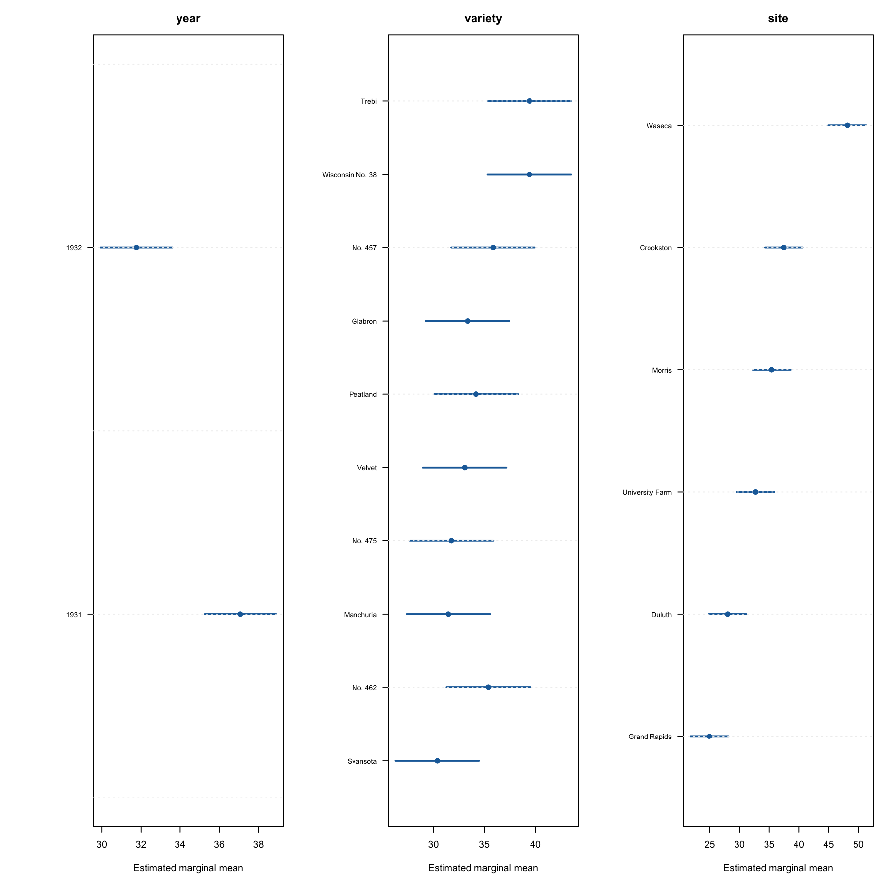

公開された120行の2年×10品種×6地点の均衡データを再現可能に取得。
Reproducibly acquires the open balanced 120-row, 2-year × 10-variety × 6-site dataset.
公開コードPublic code
公開大麦試験データを用い、設計構造・頑健推論・感度分析を統合した要因分析。
A design-aware factorial analysis of an open barley trial with robust inference and sensitivity checks.
技術スタック / Tech Stack
00

01
公開された120行の2年×10品種×6地点の均衡データを再現可能に取得。
Reproducibly acquires the open balanced 120-row, 2-year × 10-variety × 6-site dataset.
設計を反映したモデルに周辺平均、Holm補正、HC3頑健推論を組み合わせた。
Combined a design-aware model with marginal means, Holm adjustment, and HC3 robust inference.
Morris地点の年ラベル入れ替えという既知の懸念を独立した感度分析として明示。
Made the known Morris year-label swap concern explicit through a separate sensitivity analysis.
02
年・品種・地点が収量へ与える効果を、実験設計と既知のデータ懸念を尊重して評価する。
Assess year, variety, and site effects on yield while respecting the experimental design and a known data concern.
要因ANOVA、周辺平均、頑健共分散、情報量規準とLOOで候補モデルを比較する。
Use factorial ANOVA, marginal means, robust covariance, information criteria, and LOO comparison.
診断、Multiplicity補正、Morris年ラベルの感度分析で結論の頑健性を確認する。
Check robustness with diagnostics, multiplicity adjustment, and a Morris year-label sensitivity analysis.
1932年と1931年の調整平均差は-5.314で、95%区間は[-7.907, -2.722]。品種×地点交互作用の証拠は弱い。
The adjusted 1932-minus-1931 difference is -5.314 with a 95% interval of [-7.907, -2.722]; evidence for a variety-by-site interaction is weak.
03
各セルは圃場反復ではなくブロック平均であり、区画レベルの誤差を復元できない。
Each cell is already a block mean rather than a plot-level replicate, so plot-level error cannot be recovered.
04
公開コードPublic code
公開データ、完全なR分析、検証結果、図表を独立リポジトリとして公開可能。
Open data, the complete R analysis, validation results, and figures are suitable for a standalone public repository.